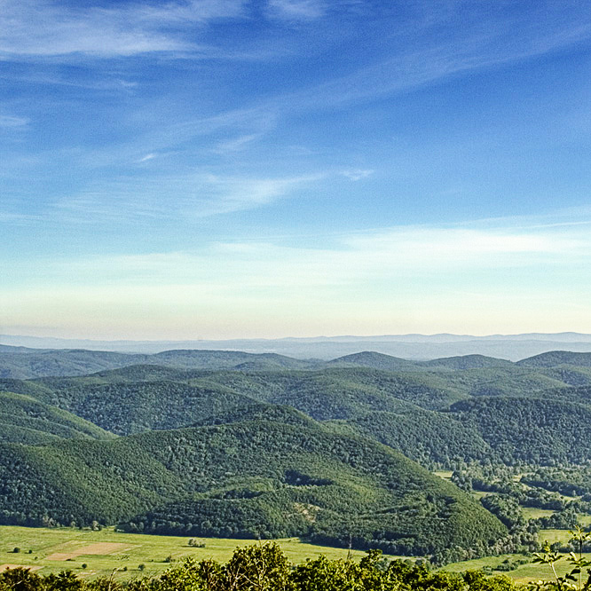

На 1-во място ще ви покажем планина Странджa
Странджа е планина в Югоизточна България (Бургаска и Ямболска област) и Европейска Турция.
Близо е до българското Черноморие. През годините е наричана Тратонзос, Салмидесос, Mons Asticus (Планината на астите), Хемимонт (в превод „Червена планина“), Парория.[1]
Странджа е разположена в източната част на историко-географската област Тракия. На север се простира до Бургаската низина, на североизток и изток до Черно море, на югозапад до Източнотракийската равнина.
На северозапад се свързва с Бакаджиците (в района село Стефан Караджово) и Дервентските възвишения (в района на село Странджа).
Странджа е ниска планина. Релефът ѝ се характеризира с разлати ридове, ограничени от дълбоко всечени между тях речни долини.
Обратно към главната страница